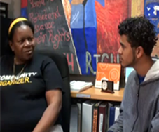
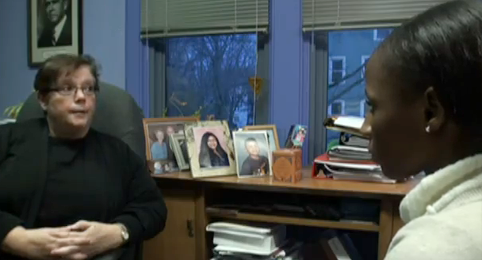

Our Impact

In the spring of 2004, after premiering their film, CJTS: At What Cost,
Youth launched a campaign demanding the closure of the facility and calling
for community-based alternatives to incarceration.
In order to raise public awareness about the issue and build a base of
support for the campaign, youth organizers at YRM held over 25 screenings
and discussions across the state of Connecticut, reaching over a thousand
community members directly and thousands more through media outlets ranging
from the New York Times to NPR.
In August 2005, just over a year after the release of CJTS: At What Cost,
Governor Jodi Rell conceded that she’d be seeking the permanent closure of
the facility. In February 2008, she reversed her decision, prompting our youth
organizers to revisit this campaign. They attempted to meet with the director
of DCF's Juvenile Services in order to gain current information about CJTS, and
in their 2008 documentary No Haven youth called for the reallocation of resources
from juvenile jails into community based youth programs.
In 2000, YRM's co-founders worked with a team of New Haven youth to create Cops,
Kids, Rights and Respect, an educational video that discussed young people's
rights and responsibilities in encounters with police. The video became the
centerpiece of a legal rights workshop facilitated by teens and law students
that reached hundreds of teens in high school classrooms throughout the city
of New Haven.

While the film met with a very positive response, students
raised a critical question, "what good is knowing our rights if police are
going to judge us anyway?"
That question prompted youth at YRM to create Know Me.
Part fictional narrative, part documentary, follows a youth
and police officer through a single day highlighting unexpected
similarities and provocative differences.

After creating the film, Youth helped design and facilitate a
curriculum that was incorporated into mandatory training for
New Haven Police Academy students. Portions of the documentary
have also been incorporated into a national police training initiative
led by the International Association of the Chiefs of Police.